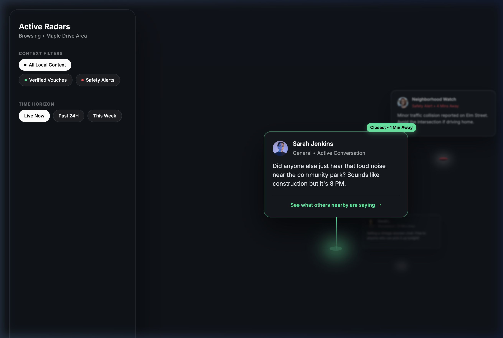
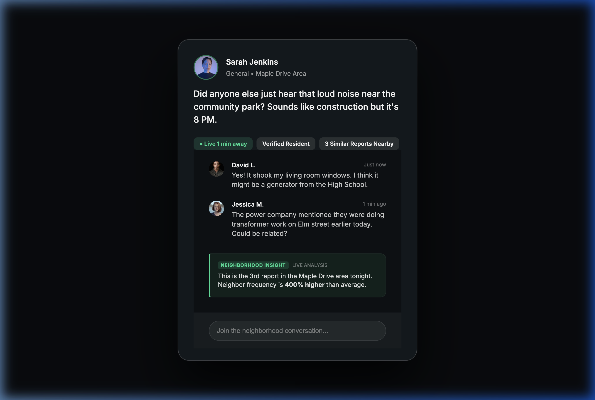

Project 02
Reimagining the neighborhood community from a linear list into a hyper-local interaction model.
Neighbors cannot quickly determine what is happening near them because relevant information is buried in a linear feed.
Instead of scrolling through dozens of posts, users can instantly understand what's happening around them based on proximity and activity density. For example, if a neighbor hears a loud noise, the closest and most active discussion surfaces immediately, reducing the time to find relevant local information from minutes to seconds.
A 3D perspective where posts are tethered to physical locations, allowing users to differentiate between a "Neighborhood Alert" and a "Street-Level Crisis" instantly.

Adaptive map dimming maintains the user's spatial orientation while they focus on a high-stakes conversation thread. Depth scaling ensures that closer activity is physically larger and sharper while distant noise blurs out.
